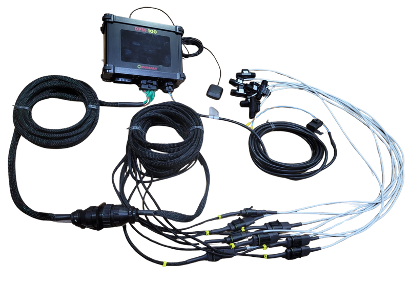

Aplicação desuniforme
Variação na taxa de fertilizante causa áreas com excesso e áreas deficientes, comprometendo toda a lavoura.
Retrofit completo com automação hidráulica, sensores inteligentes e comunicação ISOBUS compatível com monitores agrícolas do mercado. Para fabricantes de implementos, revendas e integradores de tecnologia agro.
Distribuidores sem automação geram perdas que se acumulam silenciosamente safra após safra — em insumos, em produtividade e em margem.
Variação na taxa de fertilizante causa áreas com excesso e áreas deficientes, comprometendo toda a lavoura.
Sem controle de seções e taxa variável, o distribuidor aplica além do necessário, elevando o custo por hectare.
Paradas para ajustes manuais, erros de configuração e retrabalho no campo consomem tempo e combustível.
Distribuidores antigos sem integração eletrônica não comunicam com monitores modernos nem com tratores ISOBUS.
Controles hidráulicos manuais dependem inteiramente do operador, tornando a precisão inconsistente.
Toda a qualidade da aplicação fica nas mãos de um operador. Sem tecnologia, não há rastreabilidade.
Todos os componentes eletrônicos, hidráulicos e estruturais para transformar qualquer distribuidor de fertilizantes em um implemento automatizado e inteligente.
Central eletrônica ISOBUS compatível com monitores e tratores do mercado.
Chicotes sob medida para cada modelo de implemento, com conectores de alta durabilidade.
Sensores de fluxo, posição e velocidade para monitoramento em tempo real.
Válvulas, cilindros e conexões hidráulicas de grau industrial para controle de aplicação.
Suportes estruturais e antenas de comunicação para instalação robusta no campo.

Do implemento ao monitor — automação hidráulica e controle ISOBUS integrados em tempo real.
Atuamos de forma 100% complementar ao seu negócio. Juntos entregamos a solução completa que o produtor rural precisa.
Implemento automatizado, integrado ao trator e ao monitor — com suporte técnico de ponta a ponta. Maior ticket para a revenda. Maior eficiência para o produtor.
Da primeira passada à última safra — resultados mensuráveis em produtividade, economia e controle.
Controle preciso da taxa por seção elimina sobreposições e falhas de aplicação.
Taxa variável e controle de seções reduzem desperdício de insumos em até 15%.
Integração com mapas de prescrição e GPS para aplicação localizada e inteligente.
Compatível com monitores e tratores ISOBUS do mercado. Uma tela, todos os controles.
Menos paradas, menos retrabalho e operação autônoma aumentam a área trabalhada por dia.
Aproveite o implemento existente. O retrofit ASJ transforma sem necessidade de compra de máquina nova.
Componentes projetados para o campo: vibração, poeira, umidade e impactos do trabalho pesado.
Registre cada aplicação com data, área, taxa e operador. Relatórios para auditoria e decisão.
ISOBUS (norma ISO 11783) é o padrão internacional de comunicação que conecta implementos agrícolas, tratores e monitores em uma rede unificada — como um "USB da agricultura".
Com ISOBUS, o operador controla a semeadora, o distribuidor ou o pulverizador direto pelo monitor do trator, sem cabines extras, sem fios desnecessários e sem complexidade operacional.
O implemento "conversa" com o trator em tempo real: velocidade, taxa, seções e alarmes automáticos.
O monitor do trator (ISOBUS-compatível) exibe e controla o distribuidor sem hardware adicional.
John Deere, Case, New Holland, AGCO e outros já utilizam ISOBUS como padrão em seus equipamentos.
Taxa variável por mapa de prescrição, controle de seções automático e registros georreferenciados.
Solicite um orçamento personalizado para o kit de retrofit Controle ISOBUS. Nossa equipe técnica está pronta para analisar seu implemento e apresentar a melhor solução.